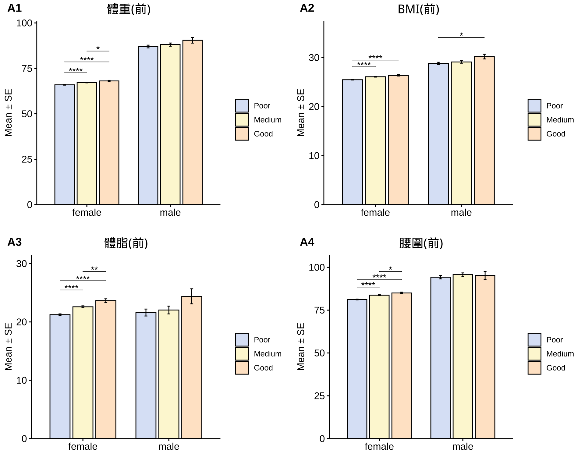
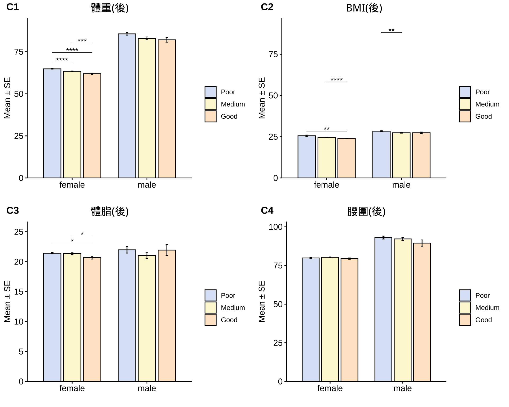
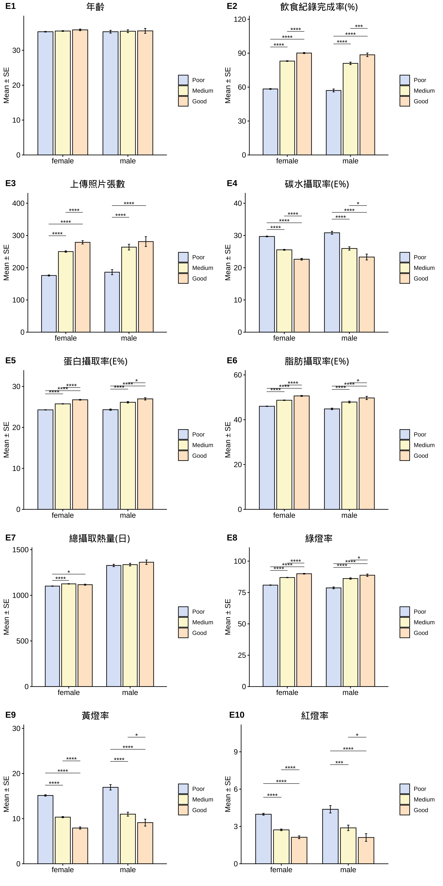
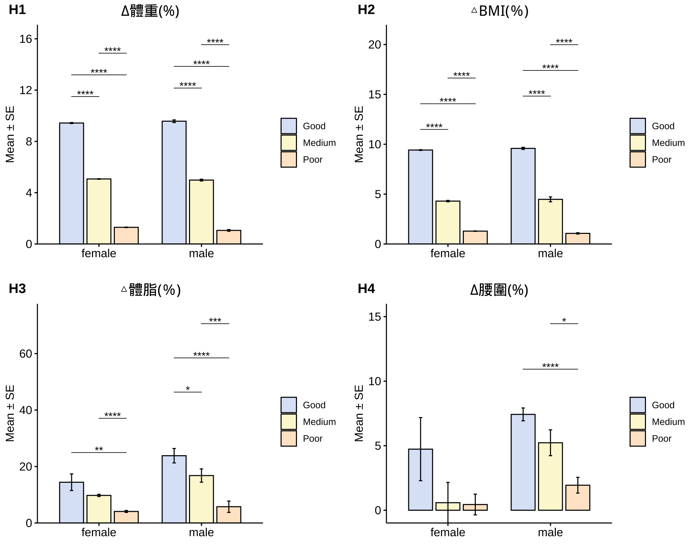
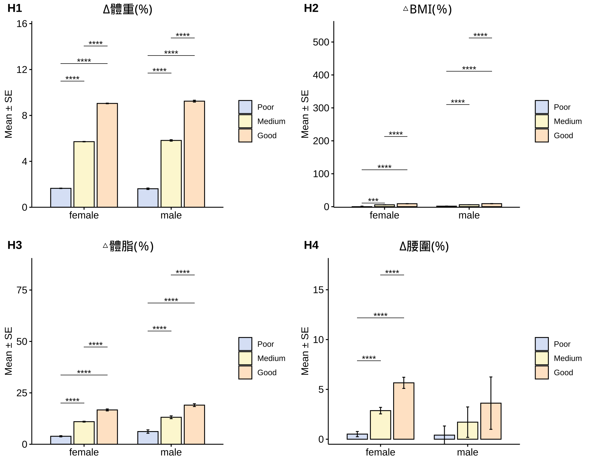

依據減重成效進行分層分析，分成三個組別：
| Poor | Medium | Good | Sum | |
|---|---|---|---|---|
| female | 5864 | 3535 | 754 | 10153 |
| male | 477 | 311 | 90 | 878 |
| Sum | 6341 | 3846 | 844 | 11031 |
|
Note: - Poor: Less than 4% - Medium: Between 4~8% - Good: More than 8% - Program: 經典8週-FLC, 進階計畫, 宋醫師專班-FLC, 宋醫師進階計畫 |


在分層分析中顯示，減重表現優異者在飲食紀錄完成度、綠燈率、三大營養素攝取比例、六大類食物攝取量等均優於減重表現低於預期者，具統計上顯著差異。



| Poor (n=5864) | Medium (n=3535) | Good (n=754) | Poor (n=477) | Medium (n=311) | Good (n=90) | 顯著差異 | |
|---|---|---|---|---|---|---|---|
| 體重(前) | 65.93 ± 0.16 | 67.21 ± 0.19 | 68.08 ± 0.38 | 87.03 ± 0.76 | 88.09 ± 0.87 | 90.46 ± 1.54 | **** |
| BMI(前) | 25.48 ± 0.06 | 26.09 ± 0.07 | 26.36 ± 0.13 | 28.82 ± 0.23 | 29.1 ± 0.25 | 30.2 ± 0.48 | **** |
| 體脂(前) | 21.24 ± 0.13 | 22.6 ± 0.16 | 23.65 ± 0.31 | 21.62 ± 0.56 | 22.04 ± 0.66 | 24.39 ± 1.29 | **** |
| 腰圍(前) | 81.21 ± 0.2 | 83.73 ± 0.24 | 85.02 ± 0.46 | 94.23 ± 0.76 | 95.71 ± 0.94 | 95.19 ± 2.22 | **** |
| 體重(後) | 64.84 ± 0.15 | 63.36 ± 0.18 | 61.92 ± 0.34 | 85.62 ± 0.75 | 82.96 ± 0.82 | 82.1 ± 1.4 | **** |
| BMI(後) | 25.54 ± 0.5 | 24.59 ± 0.06 | 23.98 ± 0.12 | 28.36 ± 0.23 | 27.4 ± 0.23 | 27.41 ± 0.43 | ** |
| 體脂(後) | 21.42 ± 0.12 | 21.36 ± 0.13 | 20.67 ± 0.23 | 21.98 ± 0.5 | 21.05 ± 0.51 | 21.94 ± 0.91 |
|
| 腰圍(後) | 79.87 ± 0.19 | 80.27 ± 0.22 | 79.46 ± 0.41 | 93.06 ± 0.73 | 92.17 ± 0.89 | 89.5 ± 1.91 | ns |
| 年齡 | 35.32 ± 0.1 | 35.53 ± 0.12 | 35.86 ± 0.24 | 35.32 ± 0.4 | 35.47 ± 0.4 | 35.57 ± 0.71 | ns |
| 飲食紀錄完成率(%) | 58.36 ± 0.36 | 83.02 ± 0.31 | 90.12 ± 0.49 | 57.04 ± 1.28 | 81 ± 1.09 | 88.55 ± 1.58 | **** |
| 上傳照片張數 | 175.94 ± 1.76 | 250.1 ± 2.27 | 278.77 ± 5.15 | 186.15 ± 7.92 | 263.85 ± 8.94 | 281.08 ± 15.33 | **** |
| 碳水攝取率(E%) | 29.7 ± 0.13 | 25.55 ± 0.15 | 22.63 ± 0.26 | 30.84 ± 0.46 | 25.97 ± 0.51 | 23.31 ± 0.91 | **** |
| 蛋白攝取率(E%) | 24.29 ± 0.04 | 25.75 ± 0.05 | 26.75 ± 0.09 | 24.33 ± 0.17 | 26.14 ± 0.18 | 26.97 ± 0.28 | **** |
| 脂肪攝取率(E%) | 46.01 ± 0.1 | 48.7 ± 0.11 | 50.62 ± 0.21 | 44.83 ± 0.34 | 47.9 ± 0.39 | 49.72 ± 0.73 | **** |
| 總攝取熱量(日) | 1101.09 ± 2.43 | 1125.43 ± 2.79 | 1116.52 ± 5.74 | 1327.22 ± 13.11 | 1336.29 ± 14.58 | 1362.71 ± 24.3 |
|
| 綠燈率 | 80.88 ± 0.19 | 86.94 ± 0.17 | 89.95 ± 0.3 | 78.68 ± 0.73 | 86.12 ± 0.55 | 88.77 ± 0.94 | **** |
| 黃燈率 | 15.14 ± 0.15 | 10.34 ± 0.14 | 7.92 ± 0.24 | 16.94 ± 0.6 | 10.99 ± 0.44 | 9.12 ± 0.76 | **** |
| 紅燈率 | 3.98 ± 0.07 | 2.73 ± 0.07 | 2.13 ± 0.11 | 4.38 ± 0.3 | 2.89 ± 0.22 | 2.11 ± 0.31 | **** |
| ∆體重 | 1.1 ± 0.01 | 3.85 ± 0.02 | 6.16 ± 0.04 | 1.41 ± 0.06 | 5.13 ± 0.08 | 8.36 ± 0.16 | **** |
| △BMI | -0.07 ± 0.49 | 1.49 ± 0.01 | 2.38 ± 0.01 | 0.46 ± 0.02 | 1.7 ± 0.03 | 2.79 ± 0.05 | **** |
| △體脂(kg) | -0.18 ± 0.08 | 1.23 ± 0.11 | 2.98 ± 0.23 | -0.37 ± 0.37 | 0.99 ± 0.49 | 2.46 ± 0.92 | **** |
| ∆腰圍 | 1.34 ± 0.09 | 3.46 ± 0.13 | 5.56 ± 0.24 | 1.17 ± 0.31 | 3.53 ± 0.67 | 5.69 ± 1.15 | **** |
| ∆體重(%) | 1.65 ± 0.02 | 5.72 ± 0.02 | 9.05 ± 0.03 | 1.61 ± 0.06 | 5.82 ± 0.06 | 9.24 ± 0.08 | **** |
| △BMI(％) | -0.05 ± 1.7 | 5.72 ± 0.02 | 9.04 ± 0.03 | 1.6 ± 0.06 | 5.86 ± 0.07 | 9.22 ± 0.08 | **** |
| △體脂(％) | 3.89 ± 0.27 | 10.99 ± 0.2 | 16.7 ± 0.46 | 6.18 ± 0.72 | 13.13 ± 0.63 | 19.03 ± 0.64 | **** |
| ∆腰圍(%) | 0.51 ± 0.22 | 2.87 ± 0.31 | 5.66 ± 0.54 | 0.41 ± 0.71 | 1.71 ± 1.39 | 3.62 ± 2.49 | **** |
|
Significance: Comparison: Good vs. Poor in female population. |